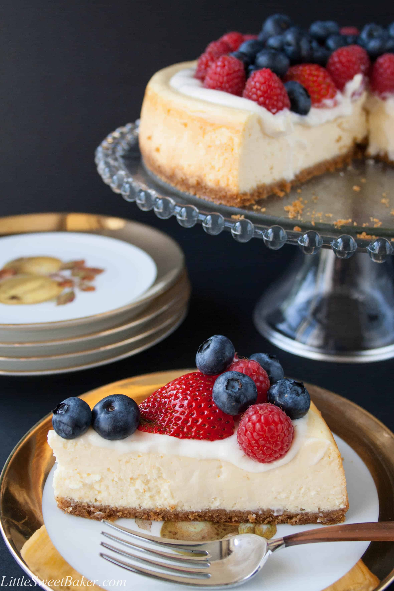

Home
Classic New York Cheesecake

| Prep Time: |
Baking Time: |
cooling Time: |
Servings: |
| 30 to 45 mins |
30 to 60 mins |
4 to 6 hrs |
15 |
Ingredients
Crust
- 1.5 cups (150g) graham cracker crumbs
- 3 tablespoons granulated sugar
- 3 tablespoons granulated sugar
- Pinch of salt
Cheesecake Filling
- 680g cream cheese
- 1 cup (200g) granulated sugar
- 3 large eggs
- 1 cup (240g) sour cream or plain Greek yogurt
- 2 teaspoons pure vanilla extract
- 1 tablespoon lemon juice (optional, for freshness)
- 2 tablespoons all-purpose flour
Toppings
- Fresh berries, berry sauce
- Chocolate or caramel drizzle
- Whipped cream
Instructions
-
Prepare the Crust:
- Preheat oven to 325°F (163°C). Mix graham cracker crumbs, sugar, melted butter, and salt in a bowl.
- Press the mixture into the bottom of a 9-inch (23cm) springform pan.
- Bake for 8 to 10 minutes until lightly golden. Cool.
-
Make the Filling:
- Beat cream cheese and sugar together until smooth (3to4 minutes).
- Add eggs, one at a time, beating on low speed after each addition.
- Blend in sour cream, vanilla, lemon juice, and flour—beat until just combined.
- Pour the filling onto the cooled crust, smoothing the top.
-
Bake:
- Place the springform pan in a larger roasting pan. Pour hot water into the roasting pan (about halfway up the sides of the springform) for a gentle water bath—prevents cracking.
-
Bake for 55 to 70 minutes, until edges look set but the center is slightly jiggly.
-
Cool:
- Turn off the oven, crack the oven door, and let the cheesecake cool for 1 hour in the oven.
- Remove and cool completely at room temperature, then refrigerate for at least 4 hours (overnight preferred).
-
Serve:
- Loosen from the pan, transfer to a platter, and top with your favorite toppings.
- Slice with a hot, damp knife for clean edges.